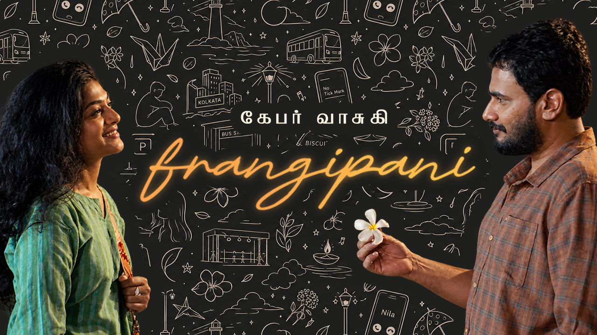
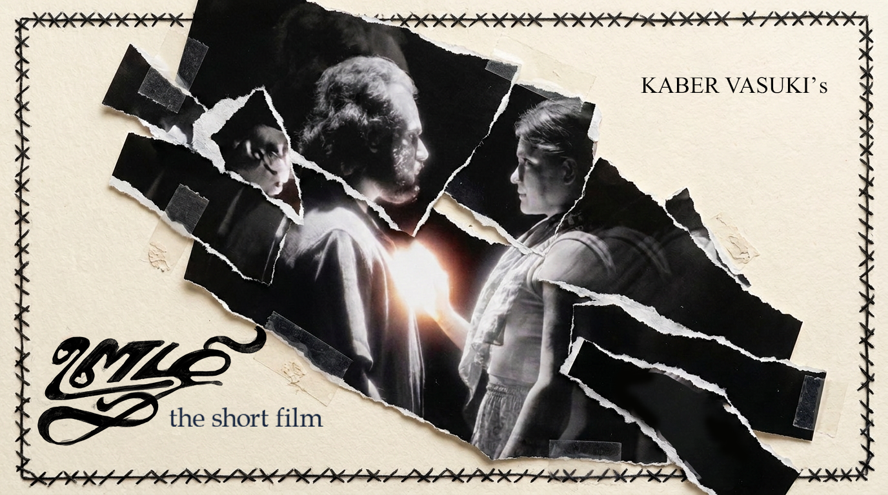
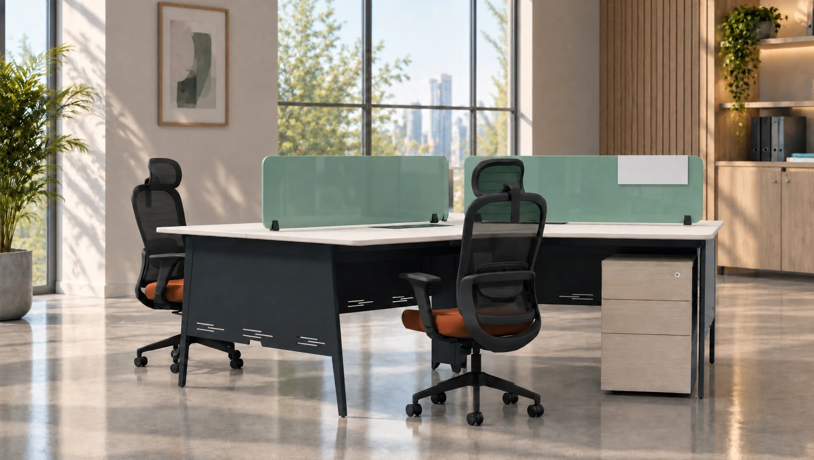
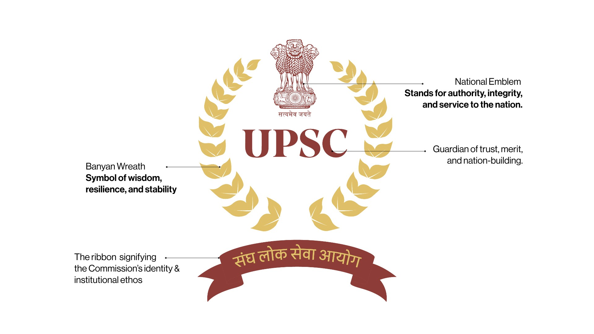
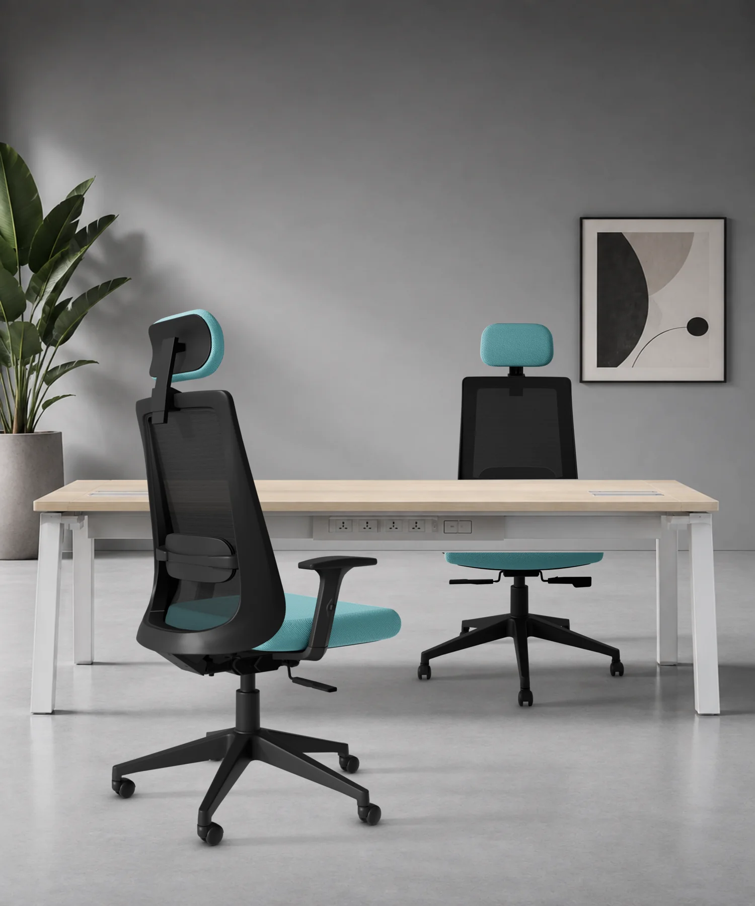
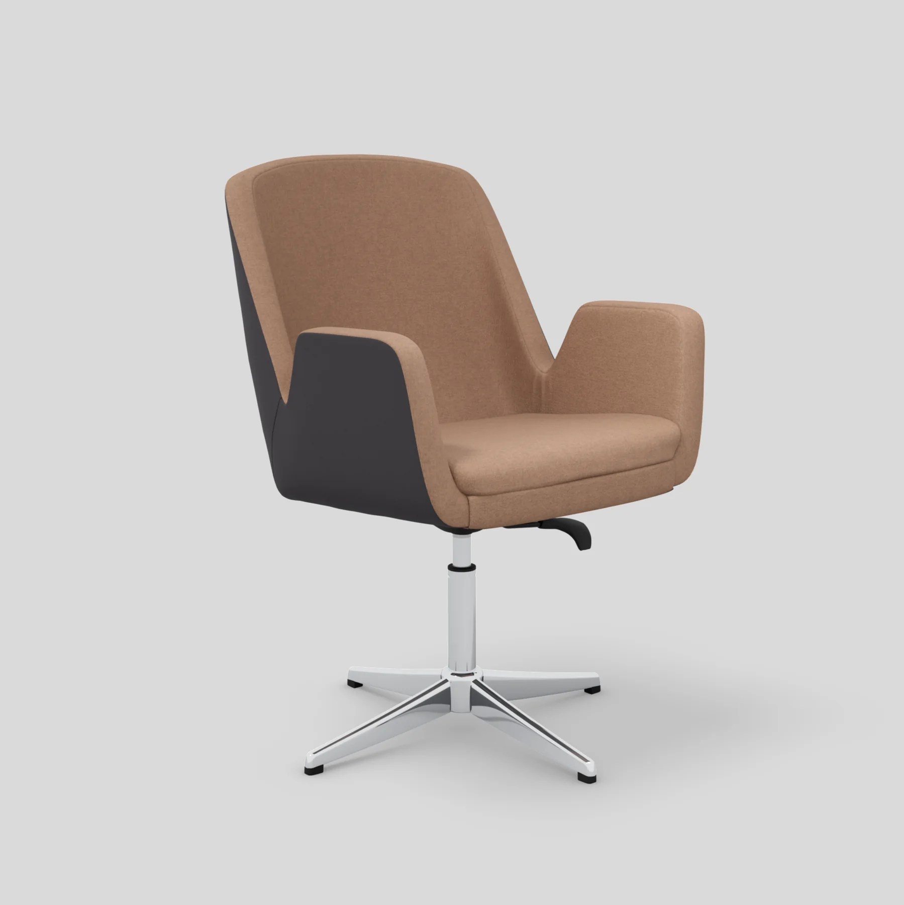
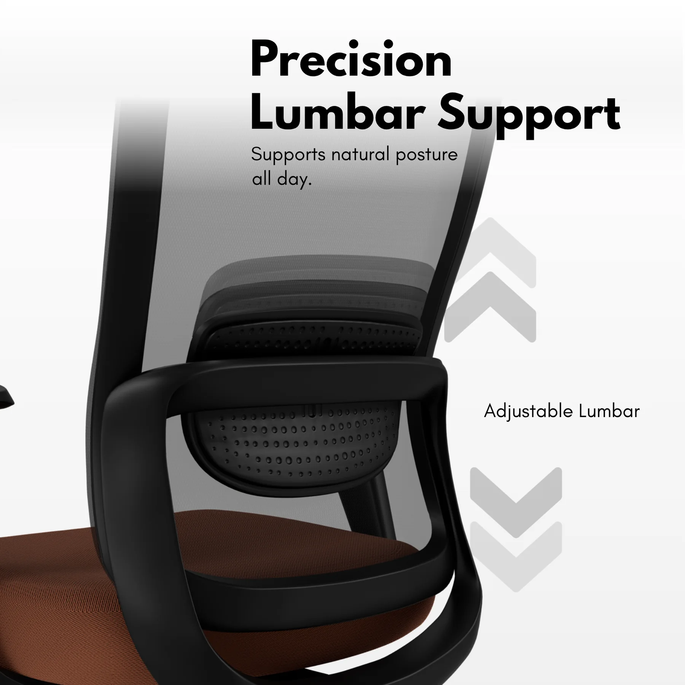
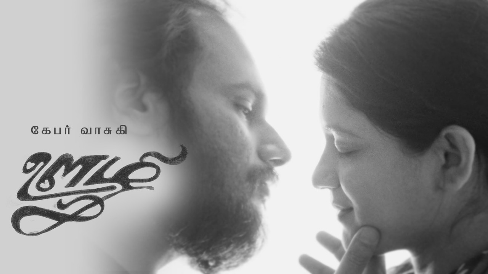

Brand identity
Logo exploration, typography, colour, identity systems and the assets that keep a brand consistent.
FINE ARTS BACKGROUND. VISUAL THINKING. HANDS-ON MAKING.
Hi, I'm Dinesh A. I work across branding, graphic design, campaigns, thumbnails, product visuals, film-related work and digital experiences. I like getting into a brief, finding the visual direction and making the final piece work where people actually see it.




I started with Fine Arts , moved through multimedia and design, and built experience across identity work, graphics, campaign assets, UI, animation and visual storytelling.
I enjoy working on the big idea and the details that make it land: composition, typography, colour, hierarchy, image treatment and how a design adapts across different formats. I can take a direction and execute it, but I also like bringing alternatives to the table when I see a better way to solve the brief.
Basically, I like making things look right, read clearly and feel like they belong.
It has a job to do. Here's the kind of work I can pick up, shape and take through to execution.
Logo exploration, typography, colour, identity systems and the assets that keep a brand consistent.
Key visuals, social creatives, digital and print collateral, adaptations and campaign rollouts.
2D compositions, 3D product visualisation, materials, lighting, packshots and presentation visuals.
Thumbnails, title treatments, film and series visuals, mood exploration and promotional artwork.
Animation concepts, motion-led graphics, visual development and support for moving-image work.
Portfolio and landing-page design, layout, responsive implementation and publishing my own sites.
Some of my design work has been for organisations with a wide public presence. The job is to make the identity clear, usable and consistent beyond one presentation or one screen.

I was part of the team behind the UPSC logo work. I also contributed to visual communication and prototyping assets for government-related publications.
Logo explorations and campaign visuals, including concept development, typography, colour and refining different identity directions.
RECENT 3D MODELLING / LIGHTING / DETAIL PHOTOGRAPHY
A comprehensive project showcase of recent 3D renderings and commercial product photography. Exploring modular workstation systems, ergonomic seating, functional mechanism breakdowns, and tactile material studies from every perspective.









I've also been involved in film and series projects, exploring visual references, mood, atmosphere and narrative lookdev. This includes practical exploration and integration of AI workflows within the VFX studio pipeline—accelerating concept exploration, visual world-building, and pre-vis look development alongside creative directors.
My usual approach is practical. Understand what needs to be communicated, find a visual route, build it, test it in the formats it needs to live in, and finish the details properly. I enjoy working alongside art directors, copy and servicing teams, contributing visual routes and then getting into the execution. Good coordination and a clean handover matter as much as the first idea.
Read the brief, ask the useful questions and get clear on the audience and message.
Research references, try a few directions and make the visual idea easier to see.
Work through layout, type, colour, imagery, illustration or 3D depending on the job.
Make it work across formats, take feedback, refine and deliver clean files on time.
NOT JUST THE MOCKUP
I design and put together my own portfolio and archive websites, then publish and maintain them. It means I think about how a visual direction behaves when it becomes an actual page: responsive layouts, image handling, type, navigation and the small details that can make or break the experience.
My Fine Arts training gave me a strong base in composition, form and visual observation. At NID, I learned to think about how people read, understand and move through an experience. Together, those have shaped the way I approach visual communication and visualisation.
Visual design, UI, UX flows, icons and game assets for an educational interactive product.
Logo explorations, typography, colour, visual communication and publication assets. Team contribution behind UPSC logo work.
Contributed to a soccer mobile game and combat racing game, including gameplay and UX flows, balancing, AI behaviour, animation checks and playtesting.
Exploring practical integration of ComfyUI, Higgsfield and Magnific into existing visual-effects workflows.
My M.Des in Game Design at National Institute of Design, Bengaluru taught me to think beyond a single image or screen. I worked with visual hierarchy, interaction, storytelling, prototyping and iteration. I bring that thinking into visualisation too: how a product is understood, how information is arranged, and how a visual works across different contexts.
Key art, YouTube thumbnails, promotional posters and visual storytelling crafted for independent music releases, short films and acoustic sessions. Hand-drawn city details, portrait photography, glowing script, custom Tamil lettering and raw textured compositions.



Thumbnails and poster designs — both artistic and functional.
These are a few personal visual experiments around music, characters, atmosphere and fandom. They are one small part of what I do, not the whole portfolio. I use a mix of design fundamentals, hands-on art direction and new tools depending on what the idea needs.
View Firangipani on InstagramOpen original reel ↗
Visual concept and mood experiment created around travel, movement and atmospheric color grading.
Watch reel on Instagram ↗Stylized anime motion exploration and character atmospheric test using digital visual workflows.
Watch reel on Instagram ↗I've been helping explore how ComfyUI, Higgsfield and Magnific can fit into existing VFX workflows. That includes testing node-based processes, exploring motion and visual development, and finding practical ways to support artists without treating the tools as a replacement for their judgement or craft.
That's a bit about me and the work I like doing.